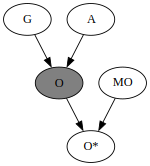
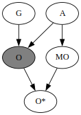
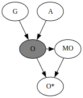
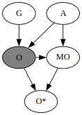
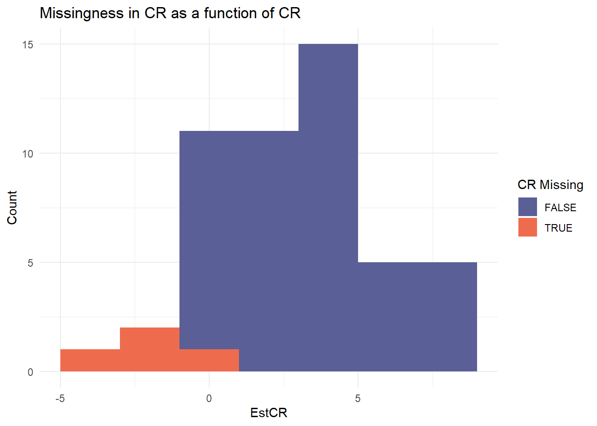
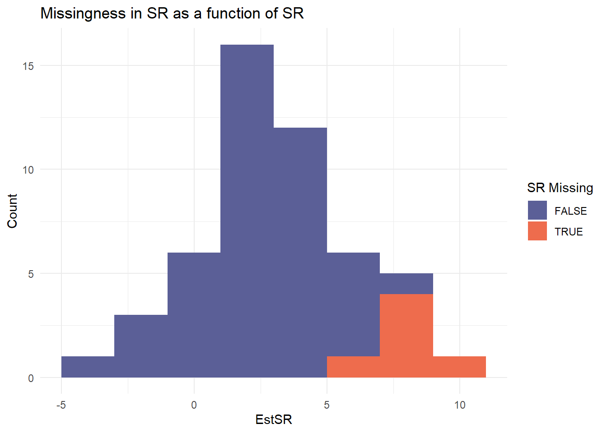
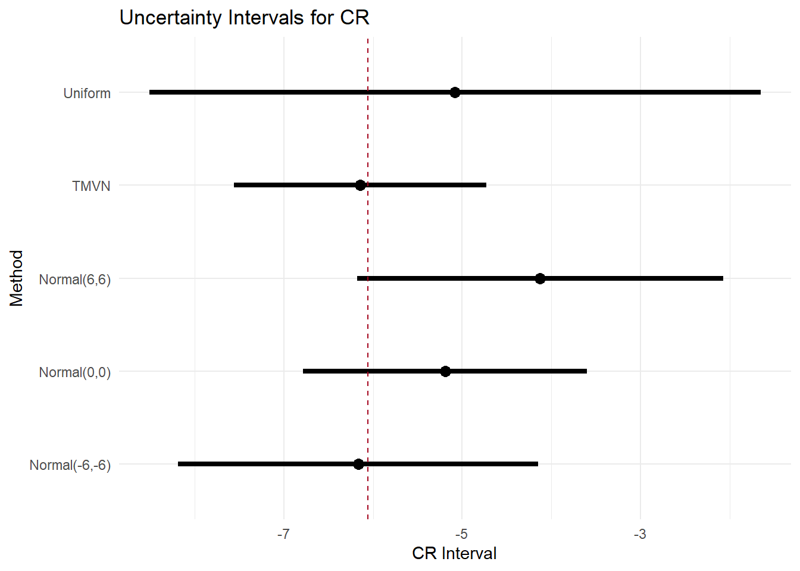
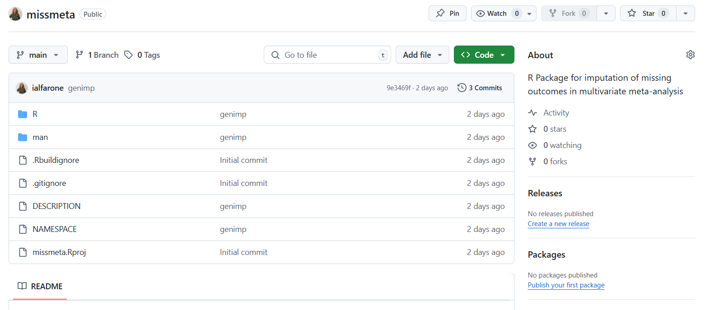

# A tibble: 6 × 7
Study N EstCR SECR EstSR SESR Cor.ws
<chr> <dbl> <dbl> <dbl> <dbl> <dbl> <dbl>
1 Arean et al. (1993)a 49 -13.2 1.62 -5.5 1.89 0.7
2 Ayen and Hautzinger (2004)a 21 NA NA -14 1.75 NA
3 Bowers et al. (1993) 16 -3.1 1.52 -5.1 2.83 0.7
4 Bowman, Scogin, and Lyrene (1995)a 20 -7.1 3.17 -10.6 4.86 0.7
5 Brand and Clingempeel (1992) 53 -4.81 1.81 -2.6 2.58 0.7
6 Carpenter et al. (2008) 24 2.10 4.04 NA NA NA Missing outcomes imputation in bivariate meta-analysis
Psicostat Hands-On, 29 May 2025
Irene Alfarone, Filippo Gambarota, Massimiliano Pastore
Missing data: An overview
Rubin (1976) introduced a foundational framework distinguishing missing data mechanisms: Missing Completely At Random (MCAR), Missing At Random (MAR), Missing Not At Random (MNAR)
These mechanisms differ from missing data patterns, which refer to the observed structure of which values are present or absent.
Patterns = “What” is missing
Mechanisms = “Why” it is missing
MCAR
MCAR: Missingness is unrelated to observed or unobserved data. The missing sample is a random subsample.
\[ P(M \mid Y, \phi) = P(M \mid \phi) \]
MAR
MAR: Missingness depends on observed variables.
\[ P(M \mid Y, \phi) = P(M \mid Y_{obs}, \phi) \]
MNAR
Missingness depends on unobserved variables (or both).
\[ P(M \mid Y, \phi) = P(M \mid Y_{mis}, \phi) \]
\[ P(M \mid Y, \phi) = P(M \mid Y_{obs}, Y_{mis}, \phi) \]
|  |  |
Back to psychological meta-analysis
Meta-analyses in psychology often combine results reported on multiple instruments:
Correlated outcomes measuring same construct
Some outcomes often missing
What if outcomes are missing not at random?
Core Idea
Replace the unobserved outcomes with many plausible draws, then meta-analyse each imputed dataset and pool the results with Rubin’s rules.
- Assume several donor distributions
- e.g., Uniform, Normal, Multivariate Normal (truncated)
- Repeated stochastic single imputation
- For every Monte-Carlo replicate
- Draw missing effect estimates, SEs, and within-study cor
- Fit a bivariate random-effects model (e.g., with
mixmeta) - Store coefficients & vcov
- Combine with Rubin’s rules
- Pool point estimates, between- & within-replicate variance
- Obtain bias, SE, CI coverage across replicates
- Evaluation
- Bias and Coverage
- Sensitivity analysis for the estimates under different assumptions
- Easily interpretable plots with uncertainty intervals
Simulation study
- 50 studies × 100 subjects each
- Outcomes:
- CR = Clinician Rating
- SR = Self Report
- Estimates via Seemingly Unrelated Regression (SUR)
Missingness Mechanism (MNAR)
- Logistic models on effect size estimates
- Missingness depends on CR (positive bias) or SR (negative bias)
|  |  |
Imputation Strategy
Distributions:
Uniform: range
Normal: Mean & SD specified
TMVN: Truncated multivariate normal
genimp = function(df, iter = 100,
imp1, imp2,
eff1 = "Eff1", eff2 = "Eff2",
se1 = "SE1", se2 = "SE2",
cor = "Cor.ws", N = "N",
imprho = 0.7) {
results = vector("list", iter)
for (i in seq_len(iter)) {
dfi = df
Nmiss1 = sum(is.na(dfi[[eff1]]))
Nmiss2 = sum(is.na(dfi[[eff2]]))
dfi[[eff1]][is.na(dfi[[eff1]])] = imp1(Nmiss1)
dfi[[eff2]][is.na(dfi[[eff2]])] = imp2(Nmiss2)
dfi[[cor]][is.na(dfi[[cor]])] = imprho
comp = !is.na(dfi[[se1]]) & !is.na(dfi[[se2]])
log_sig = cbind(
log(dfi[[se1]][comp] * sqrt(dfi[[N]][comp])),
log(dfi[[se2]][comp] * sqrt(dfi[[N]][comp]))
)
mu_hat = colMeans(log_sig)
Sigma_hat = var(log_sig)
miss = is.na(dfi[[se1]]) | is.na(dfi[[se2]])
log_draw = mvtnorm::rmvnorm(sum(miss), mean = mu_hat, sigma = Sigma_hat)
sigma_imp = exp(log_draw)
idx_se1 = which(miss & is.na(dfi[[se1]]))
idx_se2 = which(miss & is.na(dfi[[se2]]))
dfi[[se1]][idx_se1] = sigma_imp[seq_along(idx_se1), 1] / sqrt(dfi[[N]][idx_se1])
dfi[[se2]][idx_se2] = sigma_imp[seq_along(idx_se2), 2] / sqrt(dfi[[N]][idx_se2])
results[[i]] <- dfi
}
results
}Pooling with Rubin’s rules
After performing the chosen analysis on each imputed dataset, results from the bivariate meta-analysis are pooled using a procedure proposed by Rubin.
sum.meth = function(res, true1, true2) {
m = nrow(res)
Q_mat = cbind(res$eff1, res$eff2)
Q_bar = colMeans(Q_mat)
B = cov(Q_mat)
U_list = lapply(1:m, function(i) {
matrix(c(res$se1[i]^2, res$cov[i], res$cov[i], res$se2[i]^2), nrow = 2)
})
U_bar = Reduce("+", U_list) / m
Tmat = U_bar + (1 + 1/m) * B
se = sqrt(diag(Tmat))
df = (m - 1) * (1 + diag(U_bar) / ((1 + 1/m) * diag(B)))^2
ci1 = Q_bar[1] + c(-1, 1) * qt(0.975, df[1]) * se[1]
ci2 = Q_bar[2] + c(-1, 1) * qt(0.975, df[2]) * se[2]
data.frame(
est_CR = Q_bar[1], est_SR = Q_bar[2],
bias_CR = Q_bar[1] - true1,
bias_SR = Q_bar[2] - true2,
cover_CR = as.numeric(ci1[1] <= true1 && true1 <= ci1[2]),
cover_SR = as.numeric(ci2[1] <= true2 && true2 <= ci2[2]),
pci_lb_CR = ci1[1], pci_ub_CR = ci1[2],
pci_lb_SR = ci2[1], pci_ub_SR = ci2[2]
)
}Cuijpers et al. (2010)
Cuijpers and colleagues collected data from 48 studies that measure depression on both a clinician rating (HRSD) and self-report scale (BDI).
The meta-analysis highlights a substantial difference between the patients’ and clinicians’ evaluations of depression, in favor of the clinician rating.
The dataset
We analyze a subset of studies that report either the HRSD (CR scale for depression) or the BDI (SR scale for depression).
Correlation between the HRSD and BDI is set at \(\rho = 0.7\) (yes, we could perform sensitivity analyses also for this…)
Multivariate meta-analysis
Performed with mixmeta, comparable results also with metaSEM.
Call: mixmeta(formula = theta, S = Sigma, method = "reml")
Multivariate random-effects meta-analysis
Dimension: 2
Estimation method: REML
Fixed-effects coefficients
Estimate Std. Error z Pr(>|z|) 95%ci.lb 95%ci.ub
y1 -6.0612 0.5943 -10.1992 0.0000 -7.2259 -4.8964 ***
y2 -6.4748 0.8867 -7.3020 0.0000 -8.2127 -4.7369 ***
---
Signif. codes: 0 '***' 0.001 '**' 0.01 '*' 0.05 '.' 0.1 ' ' 1
Random-effects (co)variance components
Structure: General positive-definite
Std. Dev Corr
y1 2.8481 y1
y2 4.2588 0.6183
Multivariate Cochran Q-test for heterogeneity:
Q = 307.6164 (df = 61), p-value = 0.0000
I-square statistic = 80.2%
38 units, 2 outcomes, 63 observations, 2 fixed and 3 random-effects parameters
(3 units removed due to missingness)
logLik AIC BIC
-168.6260 347.2519 357.8063 What if the outcomes are MNAR?
Then we imputed the missing HRSD and BDI outcomes with random draws from selected distribution (uniform, multivariate normal, normal) to reflect different assumptions on the missingness mechanisms.
The goal is to explore if the results are robust across assumptions (more or less conservative).
|  |  |
SPOILER!1!!1
It will be (soon) available an R package that allows the user to perform multivariate meta-analysis choices with different packages and choose her favourite distributions!
